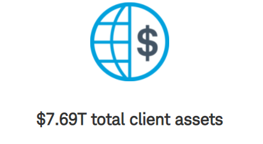
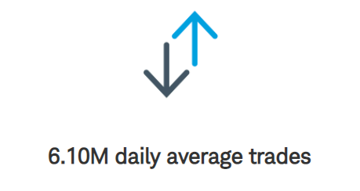
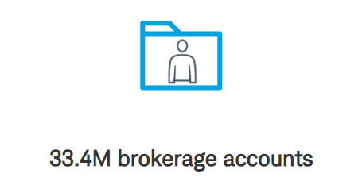

The Charles Schwab Corporation is an American multinational financial services company. It offers banking, commercial banking, investing and related services including consulting, and wealth management advisory services to both retail and institutional clients. It has over 360 branches, primarily in financial centers in the United States and the United Kingdom. It is the 7th largest banking institution in the United States with over US$ 8.5 trillion in client assets. It had 29.0 million active brokerage accounts, 2.1 million corporate retirement plan participants, 1.5 million banking accounts, and $8.5 trillion in client assets as of Feb 7, 2022. It was founded in San Francisco, California, and is headquartered in Westlake, Texas.
Presently Charles Schwab's Chief Executive Officer and Director is Walter W. Bettinger II. Charles Schwab's key executives include Walter W. Bettinger II and 32 others.
  